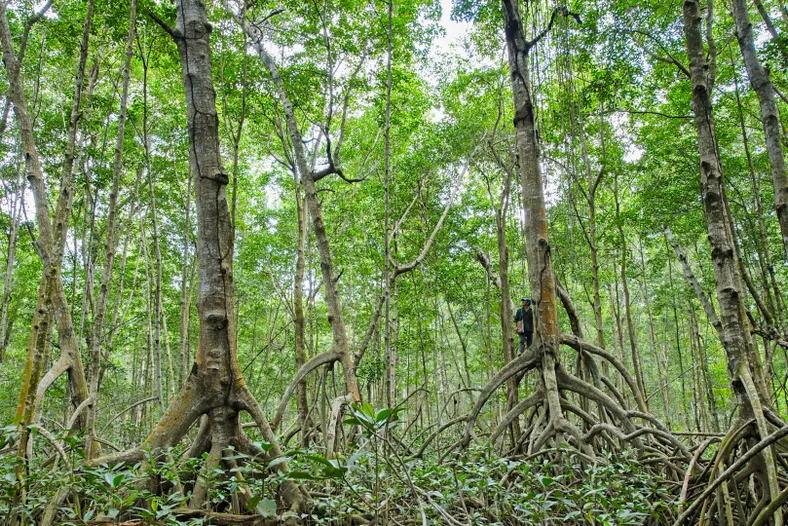
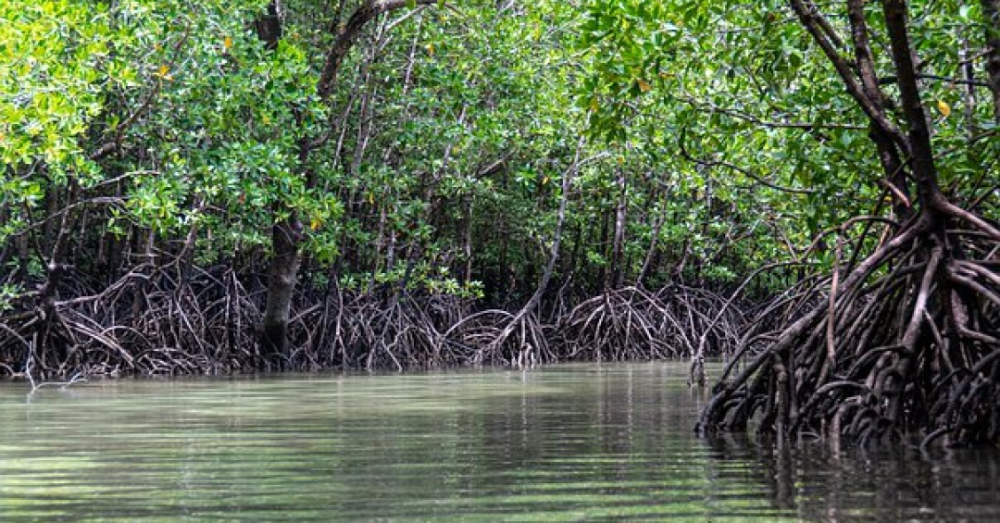
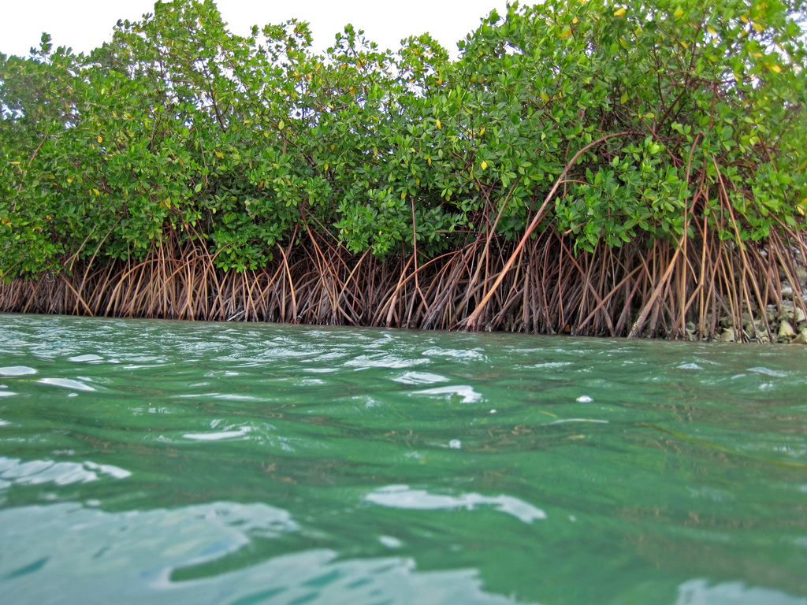
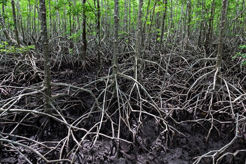
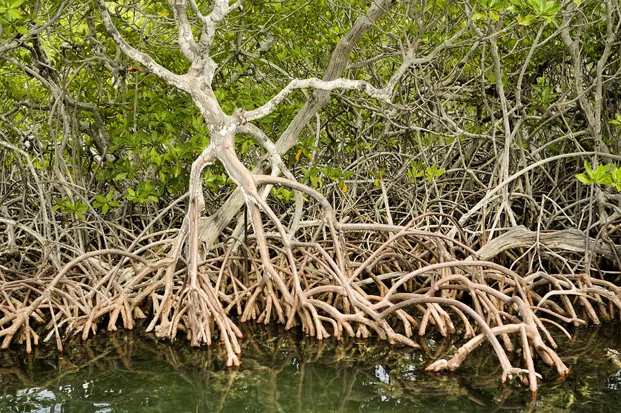

Os manguezais são ecossistemas costeiros encontrados em regiões tropicais e subtropicais, nas áreas entre a maré alta e a maré baixa. Eles se desenvolvem em zonas intertidais, onde a água do mar se mistura com águas doces de rios e chuvas. Esses ambientes são caracterizados por uma vegetação adaptada a condições salinas e solos frequentemente alagados. As principais árvores encontradas nos manguezais incluem o mangue vermelho, o mangue preto e o mangue branco, cada uma com adaptações específicas como raízes aéreas, pneumáticas e mecanismos para lidar com o excesso de sal. Os manguezais possuem solos lamacentos e ricos em matéria orgânica, e a água é salobra, uma mistura de água do mar e água doce. Esses ecossistemas desempenham papéis vitais, como proteger as costas da erosão, criar habitats para muitas espécies marinhas e ajudar na filtragem de poluentes, além de capturar carbono, contribuindo para o equilíbrio ambiental.
Os manguezais são ecossistemas litorâneos distintivos que se formam em terrenos úmidos rebaixados, localizados na zona costeira dos territórios. Também chamados de entremarés, esses ambientes são caracterizados pela influência das marés e ondas do mar. Eles geralmente se desenvolvem em estuários e reentrâncias, como se observa no litoral norte do Brasil. Esses ecossistemas são predominantes nas regiões tropicais e subtropicais, onde o calor e a umidade são intensos. Estima-se que a área total coberta por manguezais em todo o mundo atinja cerca de 136 mil km². As maiores extensões de manguezais estão na Austrália e na Indonésia, situadas nos continentes da Oceania e da Ásia, respectivamente. A presença desses ecossistemas é crucial para a biodiversidade marinha e para a proteção das áreas costeiras.
A vegetação dos manguezais, que forma o ecossistema conhecido como mangue, é altamente adaptada para lidar com as variações de salinidade características desses ambientes. Esses ecossistemas se desenvolvem em áreas onde a água doce dos rios se encontra com a água salgada do mar, resultando em condições de salinidade que podem mudar com as marés e estações do ano. As plantas que compõem o mangue são chamadas de halófitas, e elas possuem uma série de adaptações especializadas para sobreviver nessas condições desafiadoras. Essas adaptações incluem a capacidade de excretar o excesso de sal, ajustar a osmose celular e suportar a submersão prolongada em água salina. As espécies de mangue desempenham um papel crucial na proteção das costas e na manutenção da biodiversidade desses ecossistemas únicos.
Assim, as plantas que compõem os manguezais desenvolveram mecanismos especializados para lidar com as altas concentrações de sal no ambiente. Elas são capazes de excretar parte do sal que absorvem junto com a água e possuem defesas em suas folhas que evitam o acúmulo excessivo dessa substância na superfície. Além dessas adaptações, muitas espécies de mangue possuem raízes aéreas, também conhecidas como pneumatóforas. Essas raízes não apenas facilitam a respiração das plantas em solos saturados de água, mas também ajudam a proteger o solo contra a erosão e oferecem suporte adicional à planta, garantindo sua estabilidade e sobrevivência em um ambiente desafiador.
Os manguezais enfrentam vários problemas ambientais que ameaçam sua saúde e funcionalidade. O desmatamento para agricultura, urbanização e turismo reduz a capacidade dos mangues de proteger as zonas costeiras e afeta a biodiversidade local. A poluição, causada por esgoto industrial, agrícola e doméstico, compromete a qualidade da água e prejudica a saúde das plantas e animais. Além disso, as mudanças climáticas estão elevando o nível do mar, o que pode submergir os manguezais e alterar suas condições. Eventos climáticos extremos também intensificam a erosão costeira. A sobrepesca nas áreas adjacentes desestabiliza as cadeias alimentares e reduz a biodiversidade. Por fim, a sedimentação excessiva, resultante da construção de infraestruturas, pode sufocar as raízes das plantas de mangue e prejudicar o ecossistema. A preservação dos manguezais é crucial para manter seus serviços ecológicos e proteger as zonas costeiras.
Os manguezais são ecossistemas costeiros que desempenham um papel vital para o meio ambiente e para as comunidades humanas. Eles são encontrados em regiões tropicais e subtropicais, onde a combinação de água salobra e solos alagadiços cria um ambiente único. Uma das funções mais importantes dos manguezais é a proteção das áreas costeiras. Suas raízes complexas e entrelaçadas ajudam a estabilizar o solo e a reduzir a força das ondas, oferecendo uma barreira natural contra tempestades e erosão. Isso é particularmente valioso para as comunidades costeiras que enfrentam a ameaça de eventos climáticos extremos. Além disso, os manguezais são habitats cruciais para uma variedade de espécies marinhas. Eles servem como áreas de reprodução e crescimento para muitos peixes, crustáceos e moluscos, fornecendo um ambiente seguro e nutritivo. Muitas dessas espécies, que passam parte de suas vidas nos manguezais, são essenciais para a pesca comercial e para a segurança alimentar de muitas comunidades. Os manguezais também têm um papel significativo na regulação do clima. Eles são altamente eficazes na captura e armazenamento de carbono, um processo conhecido como "sequestro de carbono". Ao absorver grandes quantidades de dióxido de carbono da atmosfera, os manguezais ajudam a mitigar os efeitos das mudanças climáticas. Essa capacidade de armazenar carbono os torna um recurso importante na luta contra o aquecimento global. Em resumo, os manguezais são ecossistemas multifuncionais que oferecem proteção costeira, habitat para a vida marinha e contribuem para a regulação do clima. A preservação e restauração desses ecossistemas são essenciais para a saúde ambiental global e para o bem-estar das comunidades que dependem deles.
Os manguezais desempenham um papel crucial na proteção das zonas costeiras, ajudando a reduzir a erosão e atuando como barreiras naturais contra tempestades e tsunamis. Suas raízes estabilizam o solo, protegendo as áreas costeiras da força das ondas. Além disso, esses ecossistemas fornecem habitats vitais para muitas espécies marinhas, incluindo peixes e crustáceos, que dependem dos manguezais para reprodução e crescimento. Os manguezais também têm um impacto significativo na regulação climática, pois são altamente eficazes na captura e armazenamento de carbono, ajudando a mitigar as mudanças climáticas. Isso ocorre porque eles removem grandes quantidades de dióxido de carbono da atmosfera e armazenam-no em suas plantas e solo. Economicamente, os manguezais são importantes para a pesca, oferecendo um habitat essencial para muitas espécies comerciais e sustentando a indústria pesqueira local. Além disso, atraem turistas para atividades recreativas, como passeios de barco e observação de aves, o que gera receita e apoia as economias locais. Preservar os manguezais é essencial para manter esses benefícios ambientais e econômicos, garantindo a saúde das regiões costeiras e a qualidade de vida das comunidades que delas dependem.
Mangue Vermelho (Rhizophora mangle): Este é talvez o mais conhecido dos mangues. Caracteriza-se por suas raízes aéreas em forma de estacas, que ajudam a estabilizar o solo e fornecem suporte adicional à árvore em solos lamacentos e instáveis. As raízes também ajudam a oxigenar o solo. O mangue vermelho é especialmente adaptado a viver em áreas de maré alta e pode tolerar altos níveis de salinidade. Suas sementes germinam enquanto ainda estão na árvore, resultando em mudas que caem diretamente no ambiente adequado para crescer.
Mangue Preto (Avicennia germinans): O mangue preto é conhecido por suas raízes pneumáticas ou "tubérculos", que se projetam acima do solo para facilitar a troca gasosa em áreas com baixo teor de oxigênio no solo. Essas raízes também ajudam a estabilizar o solo e reduzem a erosão. O mangue preto é bastante resistente à salinidade e pode crescer em áreas de menor profundidade de água. Sua folhagem tem uma camada cerosa que reduz a perda de água, uma adaptação crucial para viver em um ambiente salgado.
Mangue Branco (Laguncularia racemosa): Este mangue é facilmente identificado por suas raízes de suporte mais curtas e pelo fato de que suas mudas se desenvolvem mais rapidamente em solo arenoso ou em áreas de menor salinidade. O mangue branco é mais adaptado a viver em áreas onde a salinidade e a inundação são menos intensas. Suas folhas são mais largas e possuem glândulas que excretam o excesso de sal, ajudando a planta a se manter saudável em ambientes salinos. Cada tipo de mangue contribui para a saúde e estabilidade do ecossistema manguezal. Juntas, essas árvores proporcionam proteção contra a erosão costeira, criam habitats para diversas espécies marinhas e ajudam na filtragem de poluentes da água. Além disso, elas são essenciais para a captura e armazenamento de carbono, desempenhando um papel significativo na mitigação das mudanças climáticas.
é conhecido por suas raízes aéreas em forma de estacas, que emergem do tronco e dos galhos. Essas raízes proporcionam estabilidade em solos lamacentos e ajudam a suportar a árvore em áreas com alta variação de maré. O mangue vermelho é adaptado a áreas de maré alta e pode tolerar altos níveis de salinidade. Suas sementes germinam ainda na árvore, resultando em mudas que estão prontas para crescer assim que caem na água ou no solo.
possui raízes pneumáticas ou "tubérculos" que se projetam acima do solo, facilitando a troca gasosa em solos saturados e com baixa oxigenação. Essas raízes também ajudam a estabilizar o solo e reduzir a erosão. O mangue preto é adaptado a áreas de menor profundidade de água e pode tolerar altos níveis de sal. Suas folhas têm uma camada cerosa que minimiza a perda de água e glândulas que excretam o excesso de sal.
é caracterizado por suas raízes de suporte mais curtas e menos visíveis. Este mangue se adapta bem a áreas de solo menos salgado e inundação menos severa. Suas folhas são largas e possuem glândulas que excretam o sal em excesso, o que ajuda a planta a sobreviver em ambientes salinos variáveis. O mangue branco pode ser encontrado em zonas mais elevadas dentro dos manguezais. Cada um desses mangues contribui de maneira única para o ecossistema dos manguezais. O mangue vermelho ajuda a estabilizar o solo e fornece suporte em áreas de maré alta, o mangue preto facilita a troca gasosa em solos saturados e o mangue branco se adapta a condições de menor salinidade e inundação. Juntas, essas árvores desempenham papéis essenciais na proteção costeira, na criação de habitats e na captura de carbono, ajudando a manter a saúde e a estabilidade dos manguezais.